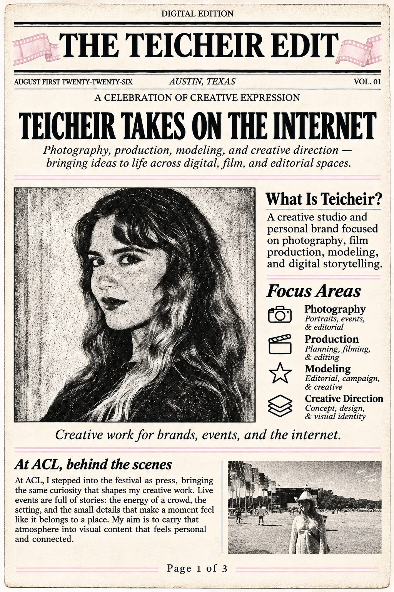
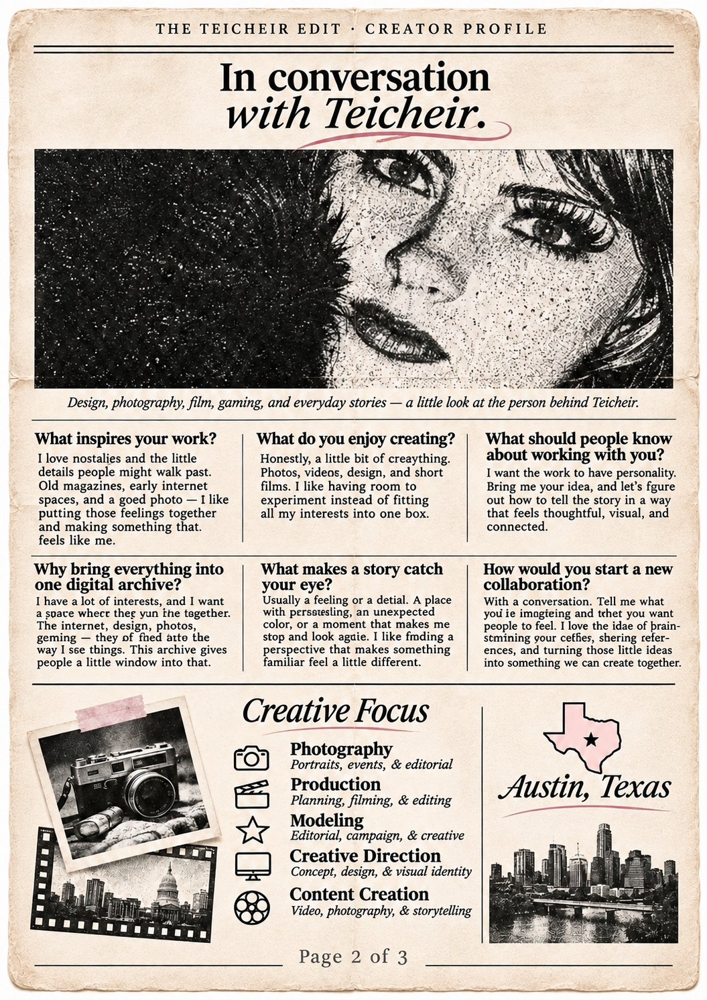
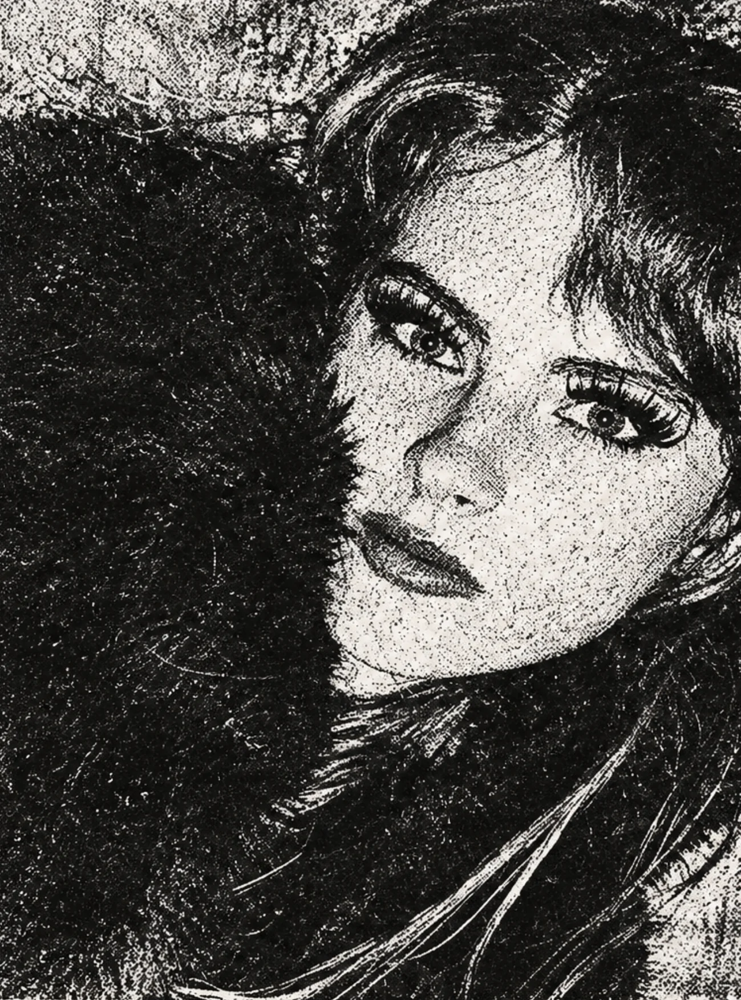

What inspires your work?
I love nostalgia and the little details people might walk past. Old magazines, early internet spaces, a good photo — I like putting those feelings together and making something that feels like me.

Digital edition. August First Twenty-Twenty-Six. Austin, Texas. Vol. 01.
A celebration of creative expression.
Photography, production, modeling, and creative direction — bringing ideas to life across digital, film, and editorial spaces.
A creative studio and personal brand focused on photography, film production, modeling, and digital storytelling.
Creative work for brands, events, and the internet.
At ACL, I stepped into the festival as press, bringing the same curiosity that shapes my creative work. Live events are full of stories: the energy of a crowd, the setting, and the small details that make a moment feel like it belongs to a place. My aim is to carry that atmosphere into visual content that feels personal and connected.


Design, photography, gaming, and everyday stories — a little look at the person behind Teicheir.
I love nostalgia and the little details people might walk past. Old magazines, early internet spaces, a good photo — I like putting those feelings together and making something that feels like me.
Honestly, a little bit of everything. Photos, videos, design, and everyday stories. I like having room to experiment instead of fitting all my interests into one box.
I want the work to have personality. Bring me your idea, and let’s figure out how to tell the story in a way that feels thoughtful, visual, and connected.
I have a lot of interests, and I want a space where they can live together. The internet, design, photos, gaming — they all feed into the way I see things. This archive gives people a little window into that.
Usually a feeling or a detail. A place with personality, an unexpected color, or a moment that makes me stop and look again. I like finding a perspective that makes something familiar feel a little different.
With a conversation. Tell me what you're imagining and what you want people to feel. I love the idea of brainstorming over coffee, sharing references, and turning those little ideas into something we can create together.